I’m a Chemistry undergraduate at Case Western Reserve University passionate about material synthesis—
exploring how structure, color, and composition interact to create new matter. Beyond the lab, through painting and
cooking, I transform the science of materials into visual and sensory design.
Research & Academic Focus
My work focuses on formamidine-rich perovskites and inorganic nanomaterials, investigating
how ligand interactions influence structural stability and optical properties. Each synthesis echoes the artistic process:
layering, reacting, and transforming.
Art Gallery
Visual explorations of chemical harmony — pigment, texture, and light behaving like atoms in flux.
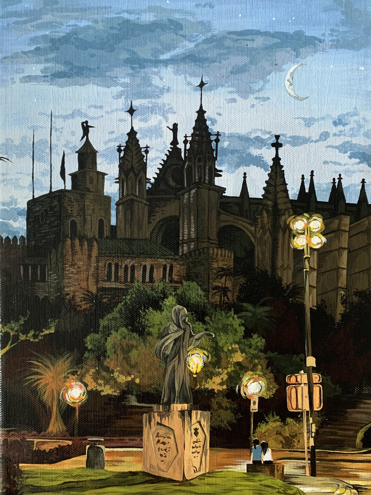
Blue Diffusion — crystalline light scattering study.
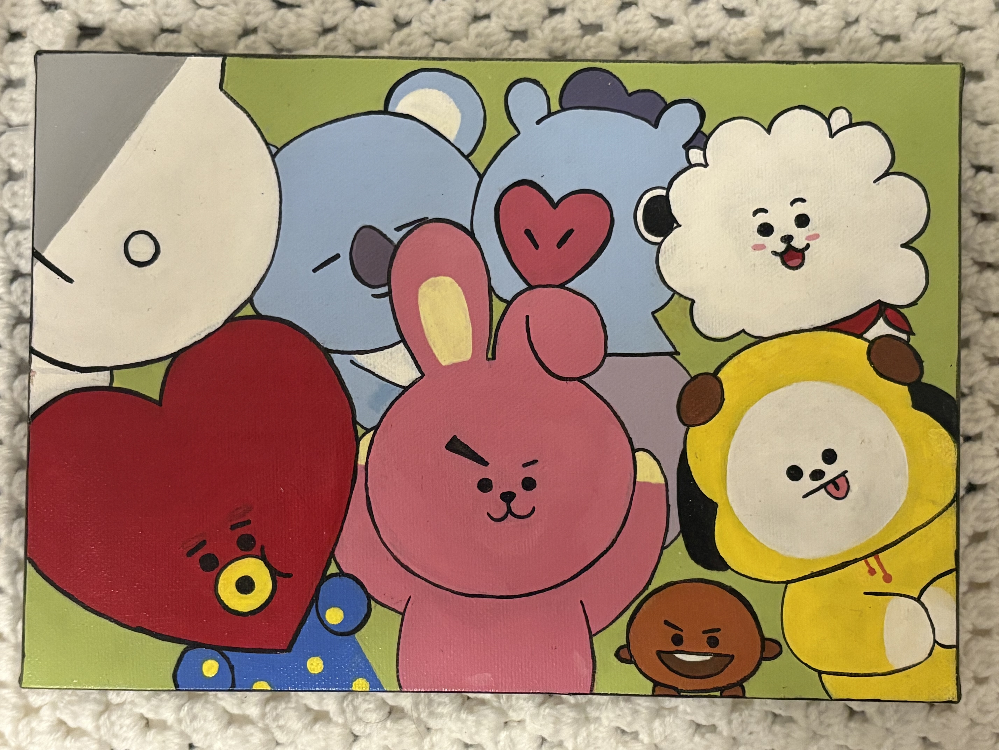
Organic Flow — gradient transitions inspired by molecular motion.
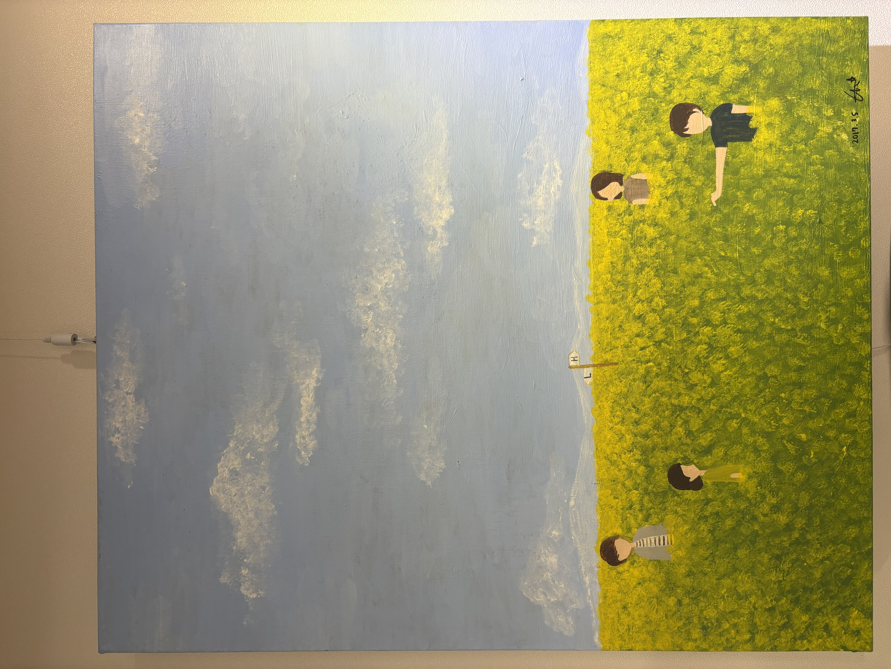
Phase Shift — geometric abstraction of equilibrium.
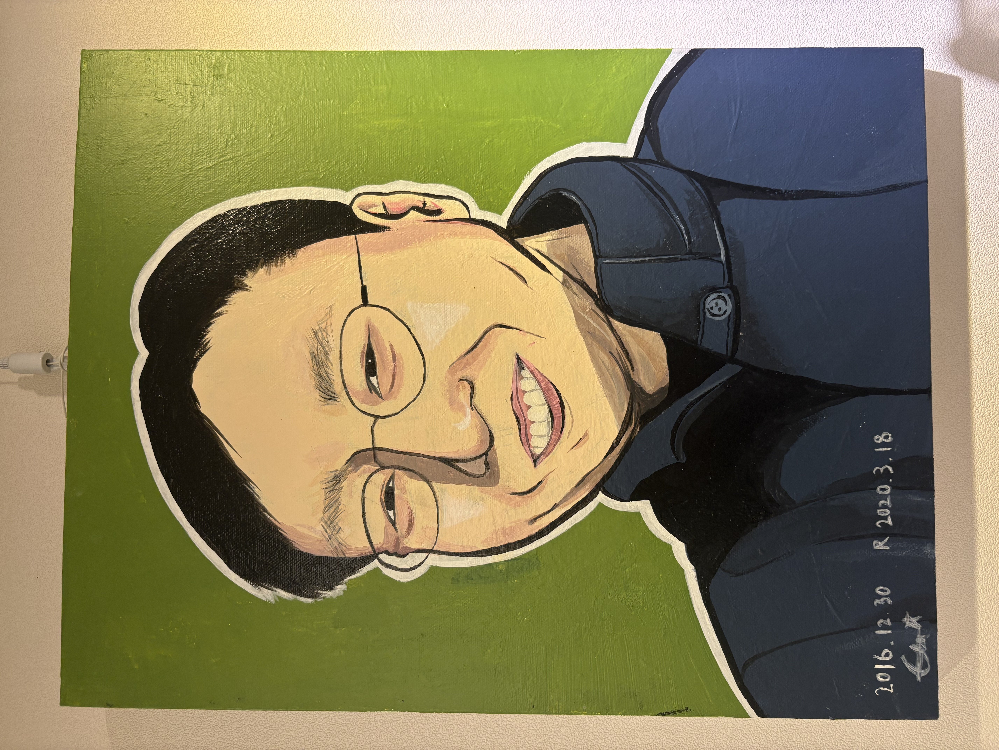
Turbulence — pigment layering and energy flow.
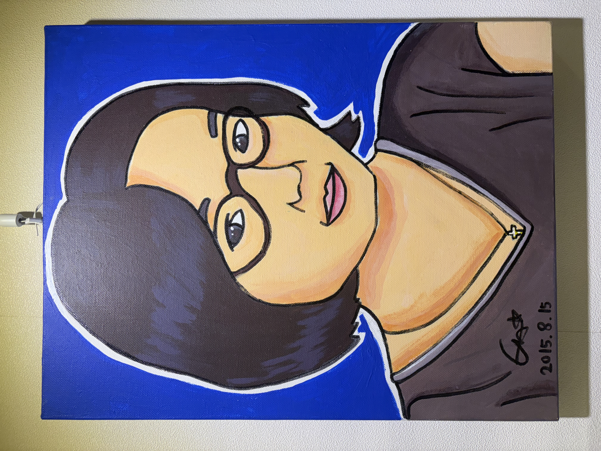
Entropy — spontaneous diffusion in color form.
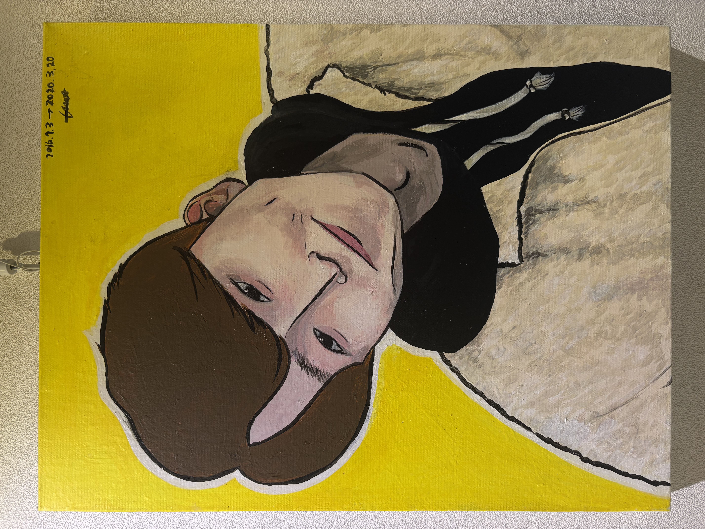
Reaction Path — controlled chaos of interacting tones.
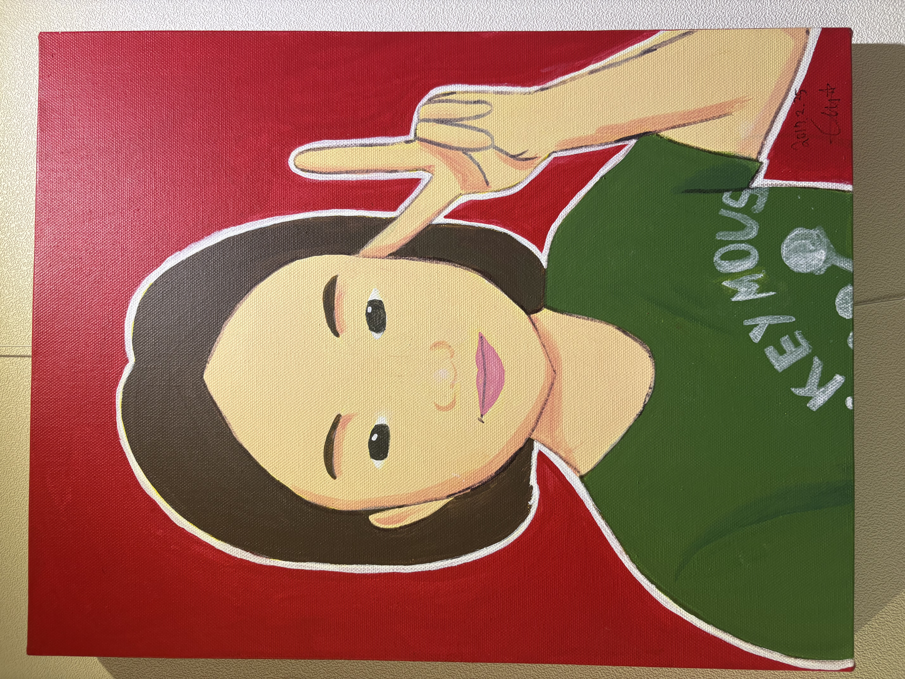
Crystalline Order — inspired by perovskite lattices.
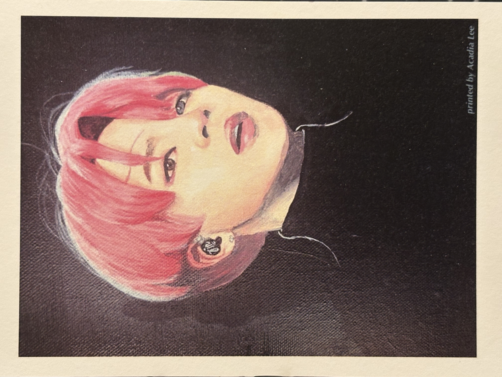
Resonance — visual rhythm from spectroscopic patterns.
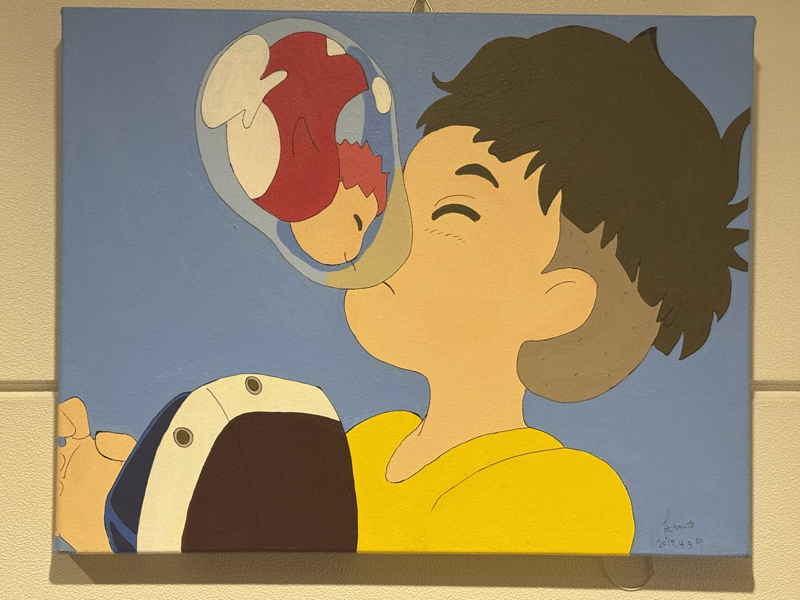
Energy State — expression of heat and transformation.
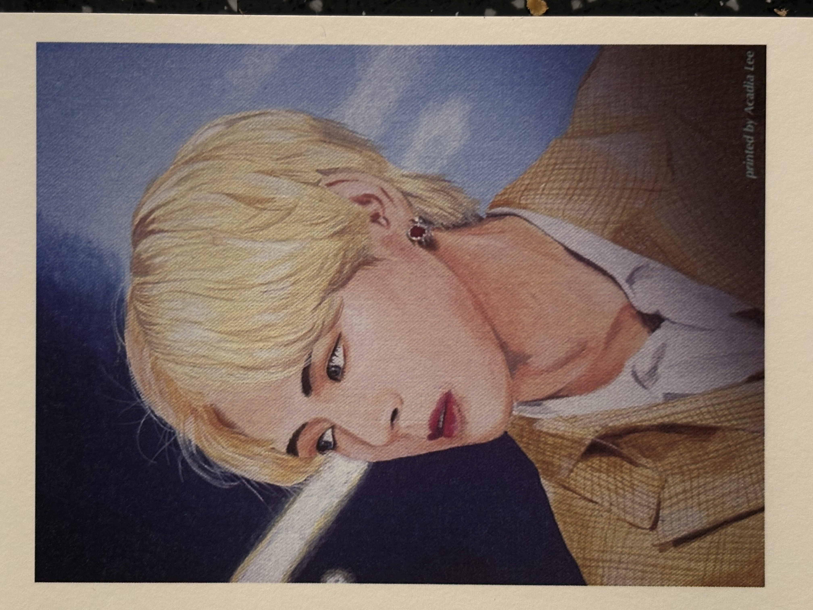
Catalyst — abstracted activation energy landscapes.
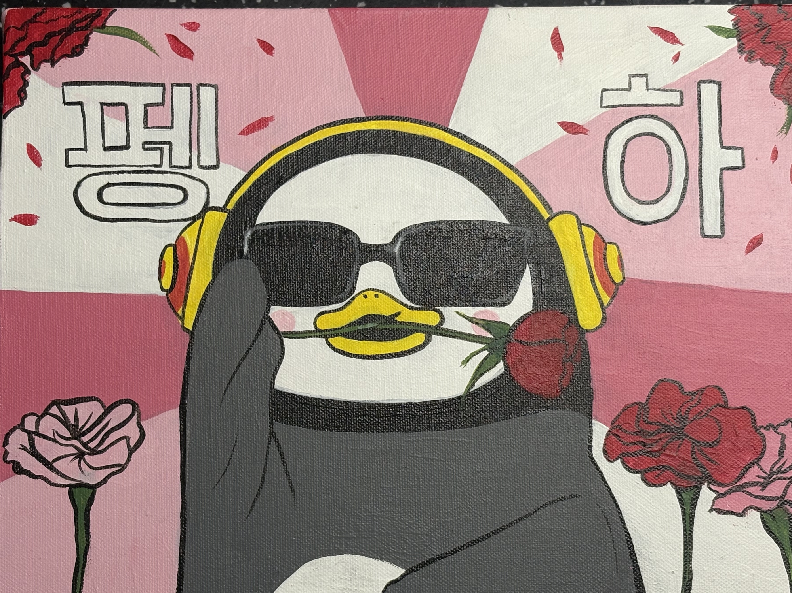
Precipitation — watercolor layers as phase change.
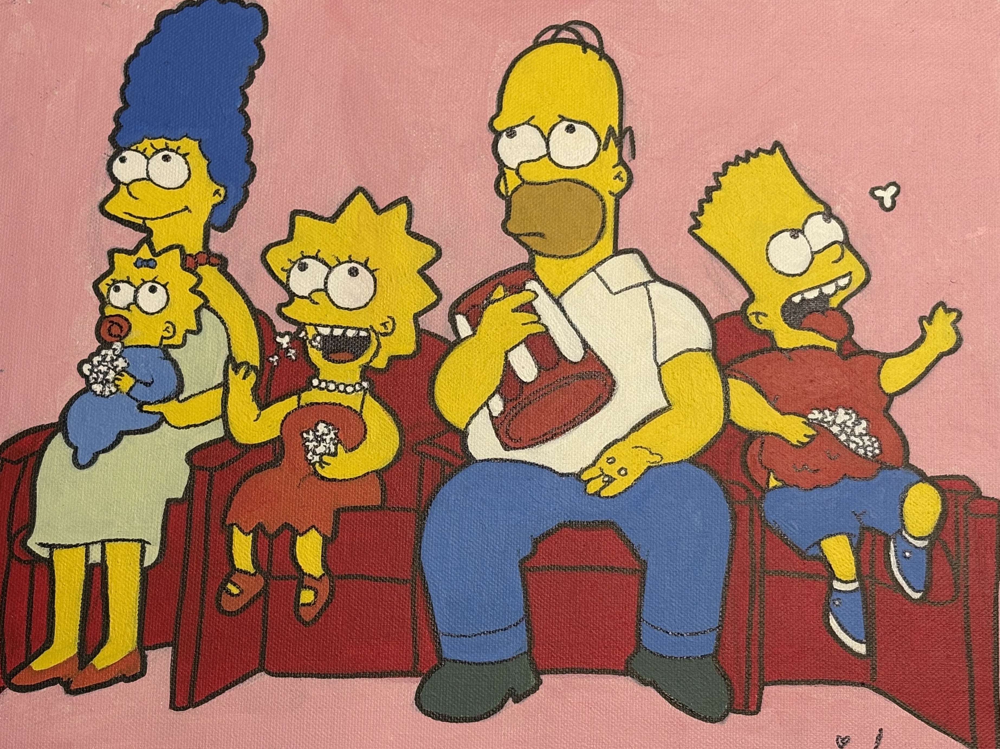
Formamide Dreams — inspired by lab synthesis colors.
Culinary Experiments
Cooking as a live experiment — temperature, structure, and diffusion creating taste as chemistry’s expression.
Lemon Pavlova — sugar crystallization and foam stability.
Matcha Soufflé — precise heat and structure control.
Umami Layers — Maillard reaction in savory art.
Crème Brûlée — sugar glass transition surface.
Berry Matrix — diffusion-inspired dessert design.
Meringue Fusion — air incorporation and elasticity.
Chocolate Bloom — lipid crystal growth control.
Aromatic Reduction — visual metaphor for concentration.
Gradient Tart — pigment diffusion through fruit glazes.
Molten Core Cake — edible phase transition.
Connecting Science & Art
From lattice structures to layered desserts, I explore how chemistry and creativity converge.
Every reaction, brushstroke, and flavor is part of a single process: **transforming materials into meaning**.